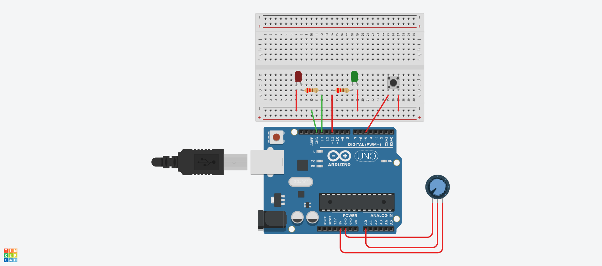

Index
O que esse código faz?¶
Este código de exemplo demonstra como controlar dois LEDs com Arduino usando um botão e um potenciômetro. Um LED é acionado por uma interrupção externa quando o botão é pressionado, e o outro LED alterna seu estado quando o valor do potenciômetro é maior ou igual a 500.
Circuito protoboard¶

Código¶
const int led = 13; //define o apelido led para o valor 13
const int botao = 2; //define o apelido botao para o valor 2
const int ledPwm = 11; //define o apelido ledPwm para o valor 11
const int potAD = A0; //define o apelido potenciometro para o valor A0
void setup(){
// Entradas e saídas digitais
pinMode(led, OUTPUT); //declara o pino13 (led) como saída
pinMode(botao, INPUT_PULLUP); //declara o pino2 (botao) como entrada
// Entradas e saídas analógicas
pinMode(ledPwm, OUTPUT); //declara o pino11 (ledPwm) como saída
pinMode(potAD, INPUT); //declara o pinoA0 (potenciometro) como entrada
// Configuração da Interrupção
attachInterrupt(digitalPinToInterrupt(botao), interrupcaoPino2, RISING); // Configura o pino2 como interrupção externa do tipo Rising (borda de LOW para HIGH)
}
void loop(){
// Programa principal
int pot = analogRead(potAD);
if (pot >= 500){
digitalWrite(ledPwm, !digitalRead(ledPwm));
delay(100);
}
}
void interrupcaoPino2() // Função de interrupção do pino2, é executado quando o botão do pino2 é pressionado
{
digitalWrite(led, !digitalRead(led));
}